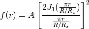
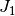
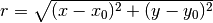
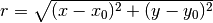
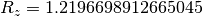
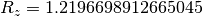

AiryDisk2D¶
- class astropy.modeling.functional_models.AiryDisk2D[source] [edit on github]¶
Bases: astropy.modeling.Fittable2DModel
Two dimensional Airy disk model.
Parameters: amplitude : float
Amplitude of the Airy function.
x_0 : float
x position of the maximum of the Airy function.
y_0 : float
y position of the maximum of the Airy function.
radius : float
The radius of the Airy disk (radius of the first zero).
Other Parameters: fixed : a dict
A dictionary {parameter_name: boolean} of parameters to not be varied during fitting. True means the parameter is held fixed. Alternatively the fixed property of a parameter may be used.
tied : dict
A dictionary {parameter_name: callable} of parameters which are linked to some other parameter. The dictionary values are callables providing the linking relationship. Alternatively the tied property of a parameter may be used.
bounds : dict
eqcons : list
A list of functions of length n such that eqcons[j](x0,*args) == 0.0 in a successfully optimized problem.
ineqcons : list
A list of functions of length n such that ieqcons[j](x0,*args) >= 0.0 is a successfully optimized problem.
See also
Notes
Model formula:

Where  is the first order Bessel function of the first kind,
 is radial distance from the maximum of the Airy
function (),
is radial distance from the maximum of the Airy
function (),  is the input radius parameter, and ).
is the input radius parameter, and ).For an optical system, the radius of the first zero represents the limiting angular resolution and is approximately 1.22 * lambda / D, where lambda is the wavelength of the light and D is the diameter of the aperture.
See [R5] for more details about the Airy disk.
References
[R5] (1, 2) http://en.wikipedia.org/wiki/Airy_disk Attributes Summary
amplitude param_names tuple() -> empty tuple radius x_0 y_0 Methods Summary
evaluate(x, y, amplitude, x_0, y_0, radius) Two dimensional Airy model function Attributes Documentation
- amplitude¶
- param_names = ('amplitude', 'x_0', 'y_0', 'radius')¶
- radius¶
- x_0¶
- y_0¶
Methods Documentation
- classmethod evaluate(x, y, amplitude, x_0, y_0, radius)[source] [edit on github]¶
Two dimensional Airy model function